The Tunnel
Yale University Press, 1995.
The Tunnel examines the lives of homeless people who have built homes in an Amtrak tunnel under the West Side Highway, popularly referred to as the "Freedom Tunnel". Consisting of photographs and oral histories Morton collected between 1991 and 1995, the book depicts a variety of improvised accomodations, including freestanding cinder-block structures once used by railroad laborers and deep recesses in the tunnel walls, accessed by tall ladders.
Tunnel residents speak to their own varied points of origin, their frustration with the inadequacy of New York City shelters, and the modicum of privacy that the Tunnel affords. Following Amtrak's announcement of its intention to evict these residents, Morton and Marc Singer (whose film Dark Days is also set here) worked with Coalition for the Homeless to allocate housing vouchers to those willing live in apartments.
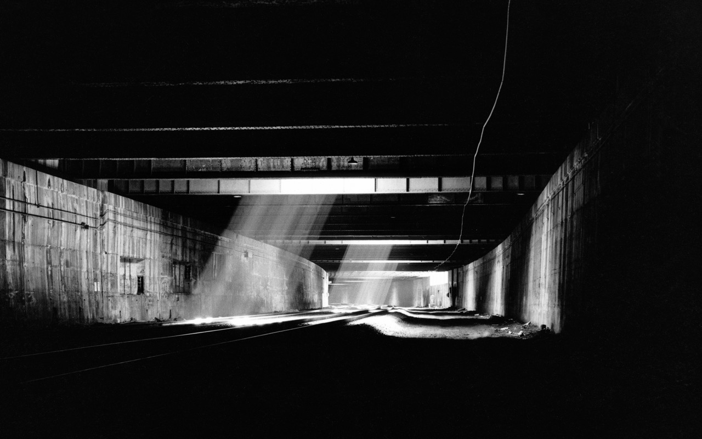
Jimmy's Garden [Harmony Squat], Norfolk and Broome Streets, 1991.
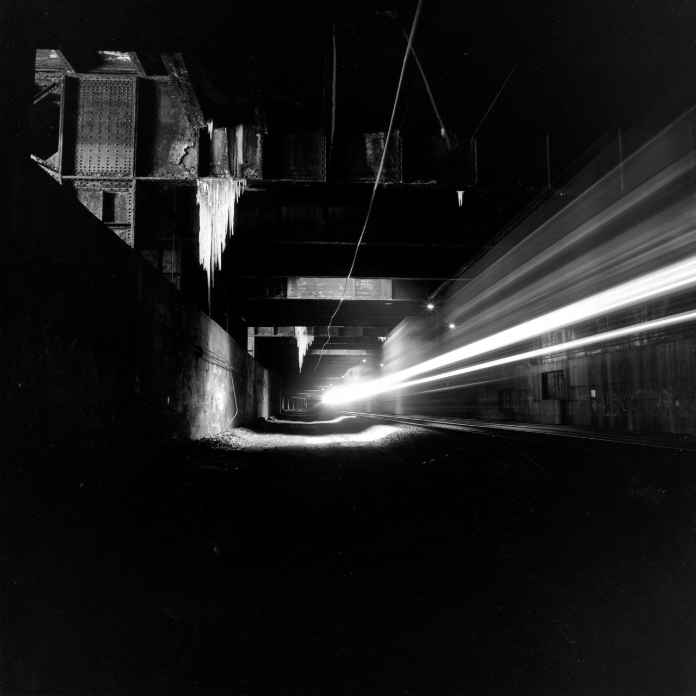
Jimmy's Garden [Bulldozed], Norfolk and Broome Streets, 1991.
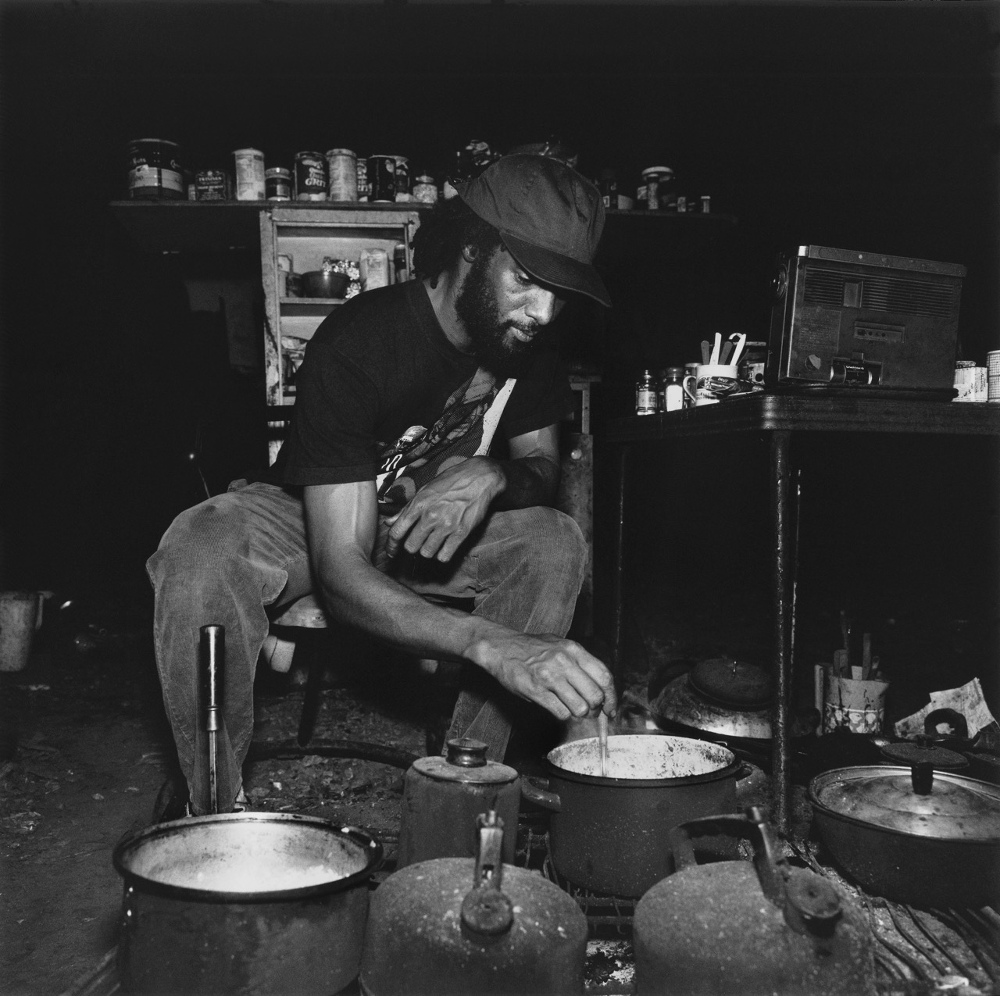
Guineo's Garden, Bushville, 1991.
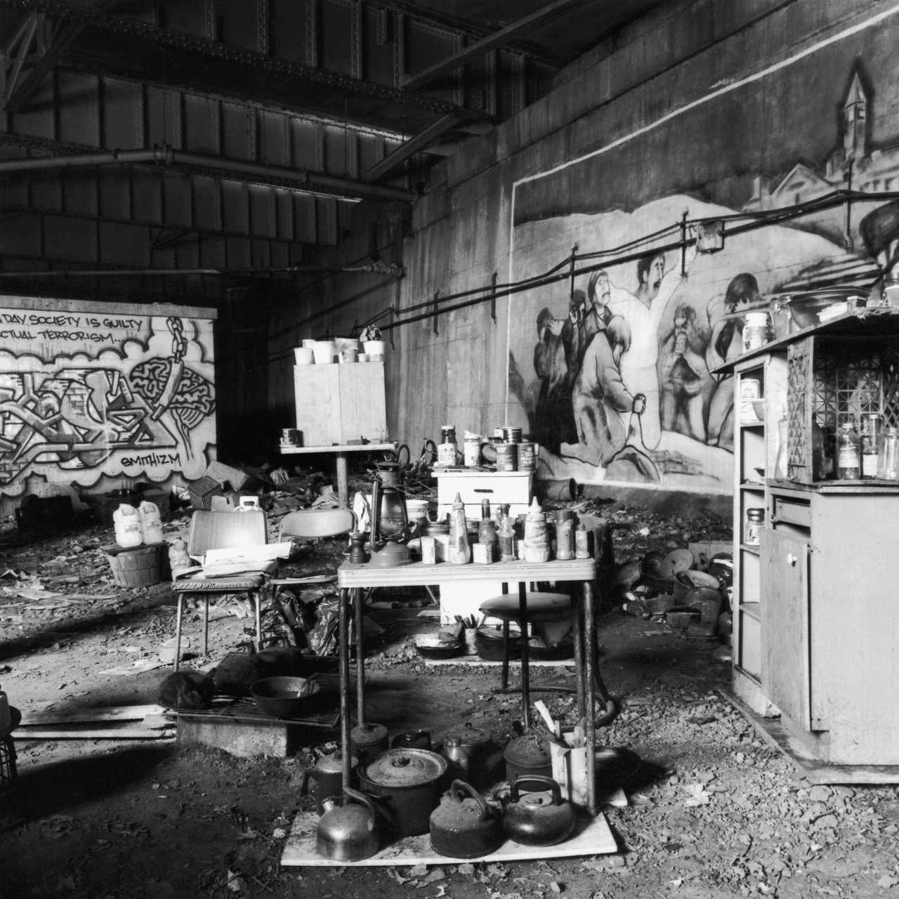
Guineo's courtyard, Bushville, 1991.
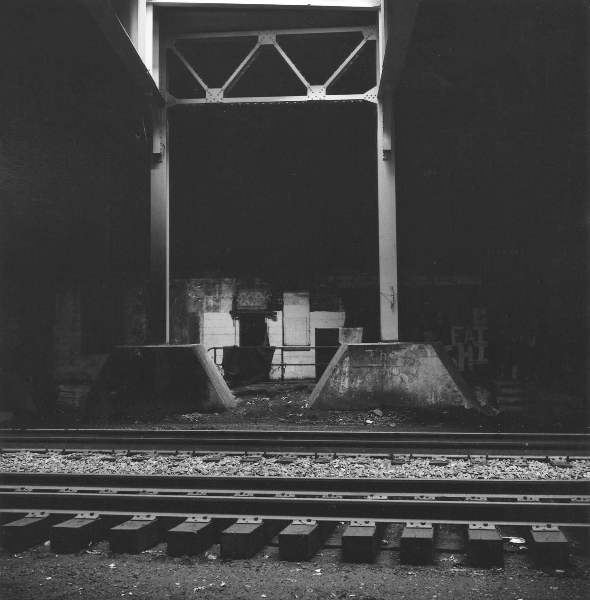
Guineo [with bugbane in his courtyard], Bushville, 1991.
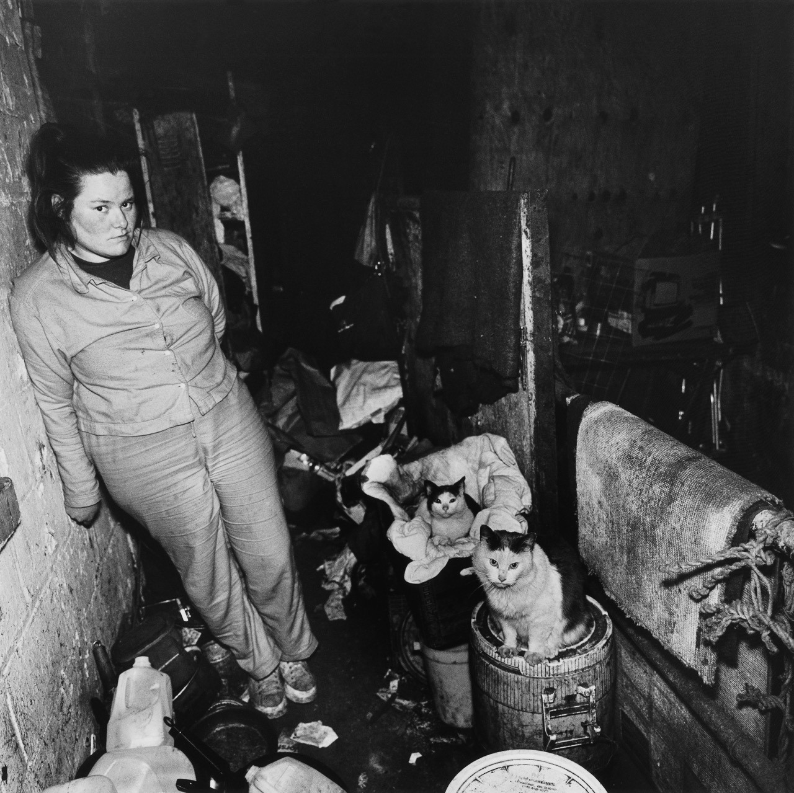
Angelo's Garden [detail with billiard ball], Pier 84, 1991.
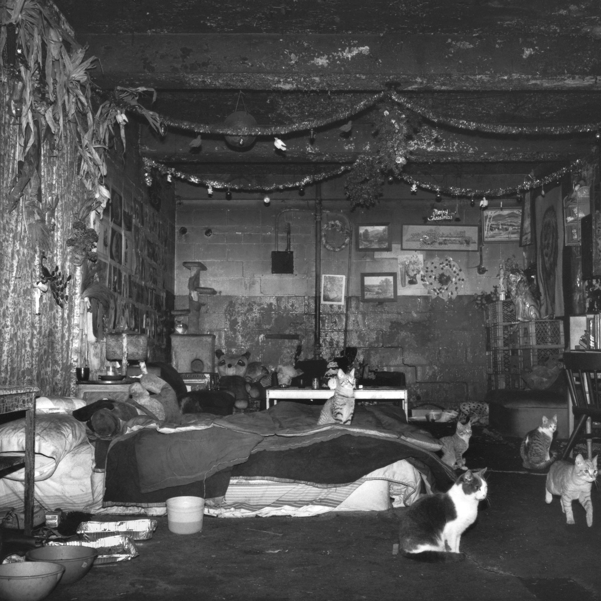
Stuffed Animals in Anna's Garden, 1992.

Roof of Mr. Lee's house, the Hill, 1992.
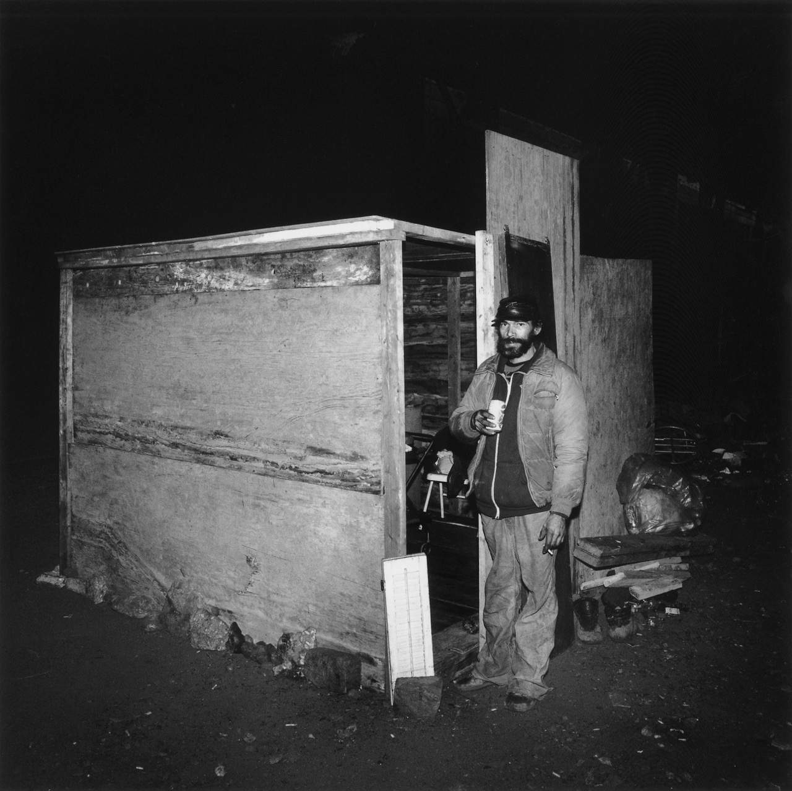
Roof of Mr. Lee's house, the Hill, 1992.
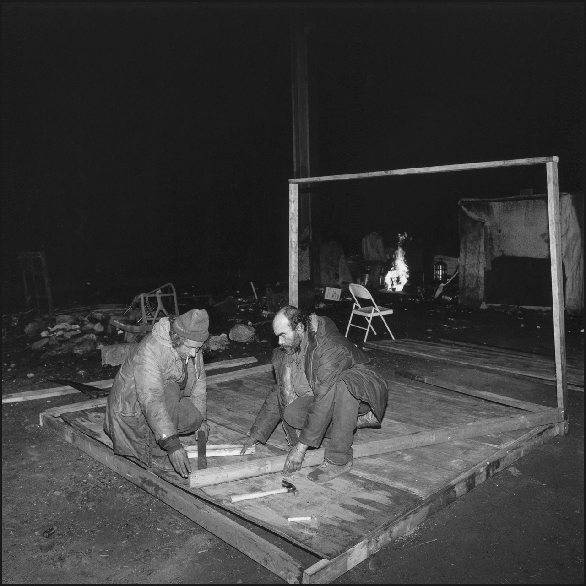
Roof of Mr. Lee's house, the Hill, 1992.
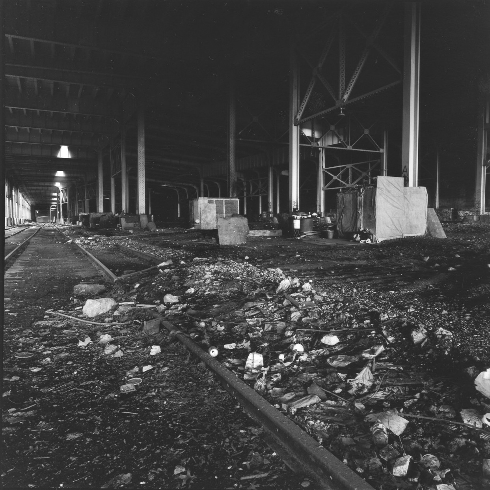
Roof of Mr. Lee's house, the Hill, 1992.

Roof of Mr. Lee's house, the Hill, 1992.
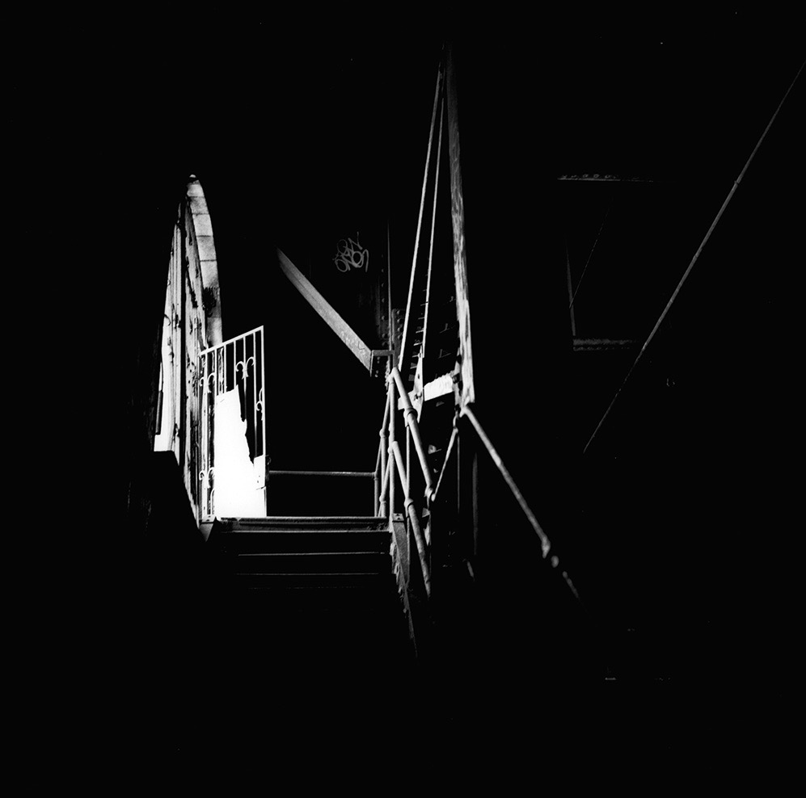